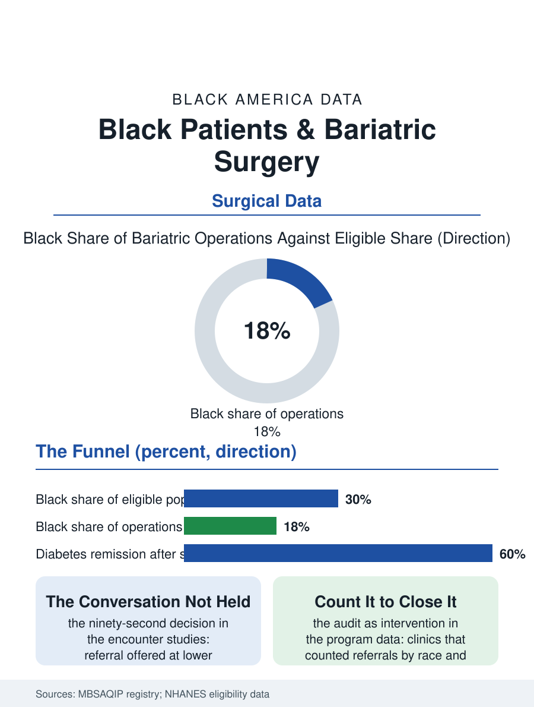

Black Public Health
The Conversation Not Held: Black Patients and Bariatric Surgery
The highest eligibility and a fifth of the operations, the funnel narrowing at the referral conversation and the program's gauntlet. The bariatric file.

Bariatric surgery is the most effective treatment for severe obesity in the outcomes literature, and its utilization file is the diabetes file's shadow: Black patients, who carry the highest severe obesity rates, receive the operations at rates well below their share of the eligible population, with the gap located at the referral and the program's front door rather than in the operating room. This article reads the bariatric file.
Eligible and Referred
The eligibility pool is the file's base: the severe obesity classes, the body mass index above forty and above thirty-five with the comorbidities, count Black women at the highest rates of any demographic in the NHANES data, so that the eligible population's composition is substantially Black while the operated population's, in the registry and claims data, is roughly a fifth Black against a much larger eligible share, a funnel whose every stage the decomposition studies have walked: the primary care conversation, where the weight discussion itself is documented to occur less and later with the Black patient, the referral, offered at lower rates to the eligible Black patient in the encounter studies, the program's gauntlet, the months of supervised visits, the psychological and nutritional evaluations, the insurance preauthorization whose documentation burden filters by the patient's capacity to attend the weekday appointments the schedule file prices, and the operation itself, where the outcomes data show the Black patient's results, the weight loss somewhat less on average in the registry analyses, the diabetes remission rates strong in every group, the complications modestly higher along the hospital quality distribution's lines. The adolescent file at the evidence's edge, the severe obesity of the teenage years and the operation's growing pediatric evidence base, is beginning its own referral count, with the children's hospitals' programs reporting the same eligible-versus-referred arithmetic in miniature.
Why the Funnel Narrows
The preference file enters here with its now-familiar discipline: the surveys find Black patients expressing more wariness of the operation, the community's memory carrying the early era's surgical casualties and the cultural reading of the operation as the drastic option, alongside the body image file's different center, the Black community's beauty standards historically more capacious than the clinic's, so that the demand at a given body size is genuinely lower, a preference the file respects as data rather than treating as a barrier to be corrected. The system's components of the gap are the ones the intervention literature works: the referral default, the programs that prompt the conversation at the eligible threshold regardless of the clinician's instinct posting the narrowing referral gap; the program access geography, the accredited centers' distribution against the eligible population's map; and the insurance file, the Medicaid programs' coverage of the operation varying by state in the pattern that makes the eligible poor patient's state her surgeon's first determinant. The medical management era, the GLP-1 medications of the diabetes file, is redrawing the funnel's mouth in the current data, the medications absorbing the patients the operation never reached and raising the file's new question, whether the drug era narrows the treatment gap or builds a new one on the pharmacy benefit's terms.
The Operation's Evidence
The bariatric file closes on the evidence the funnel withholds: the long-term studies record the operation's effects on the diabetes, the blood pressure, the sleep apnea, and the mortality itself at magnitudes no other obesity intervention matches, so that the under-referral of the most burdened population is, in the outcome arithmetic, one of the health file's larger forgone benefits, countable in the remissions not achieved in the population whose diabetes rates lead the file. The programs that closed their referral gaps did so by the system's own confession's method, counting the referrals by race at the clinic level and publishing the count to the clinicians themselves, the audit as the intervention. The registry counts the operations each year, the Black share climbing slowly with the eligible population's insistence and the medications' reshaping of the whole field. The file's last entry is the primary care visit's fork: the eligible patient, the chart's flag visible, the conversation held or held off, a decision made in the visit's last ninety seconds whose consequences the registry will total a decade later, in the remissions column, under the names of the patients who were asked.
More in Black Public Health
Hypertension Among Black Adults: Prevalence, Control, and Consequences
About 55 percent of Black adults have hypertension — the highest rate of any U.S. group. Prevalence, onset, control, and the stroke, heart, and kidney consequences in the data.
Diabetes Among Black Adults: Prevalence and Complications
Nearly one in five Black adults has diabetes, diagnosed or undiagnosed — and its complications fall with particular weight. The CDC data on prevalence, control, and outcomes.
Black Life Expectancy: The Gap at Birth and Its Causes
Black life expectancy at birth is about 73 years, roughly five years below the national figure — the summary measure of every health gap in this section. The CDC data.
Source: Metabolic and Bariatric Surgery Accreditation and Quality Improvement Program registry; NHANES severe obesity prevalence data.